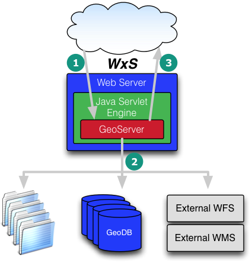
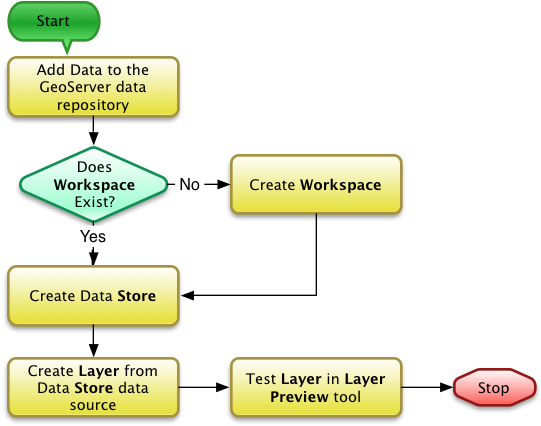

- SOA Review
- Server Platform
- Online Mapping Server Applications: COTS & Open Source
- What is GeoServer
- Working with GeoServer
- Demonstration

- Services Oriented Architecture (SOA) for Geospatial Data and Processing
- Data, Processing & Client Tiers
- Open Geospatial Consortium Interoperability Standards
- Geospatial Metadata Standards
- Internet Standards
- Web: HTML, CSS, JavaScript, XML
- SOAP - Simple Object Access Protocol
- REST - Representation State Transformation
In the context of server platforms for online mapping with OGC services, there are several components that are of interest
- The operating system - the software environment in which all applications on a computer operate (e.g. Windows, Mac OS X, Linux)
- The web server - the application that listens for incoming requests from the Internet (e.g. Apache, IIS)
- The mapping server - the application (that may also include the web server) that enables online mapping applications, that may include support for one or more OGC service interfaces (e.g. GeoServer, MapServer, CubeWerx, ArcGIS Server)
Sample Commercial Off-the-Shelf (COTS)
- ArcGIS Server (info)
- CubeWerx SDI Suite (info)
- ERDAS APOLLO (info)
Sample Open Source
GeoServer is an Open Source, Open Standards supporting geospatial web services platform
- GNU General Public License
- WMS, WFS, WCS
- Written in Java as a web application commonly hosted on the Jetty HTTP server and Java servlet engine
- An appropriate version of Java must already be installed
OS-Independent Binaries are Available for Multiple Platforms (these are just ‘run’ to start the server)
- Includes the Jetty HTTP server
- Windows, Mac OS X, Linux
- There are OS-specific configuration instructions for each operating system
GeoServer may be integrated into existing Java web servlet applications (such as Apache Tomcat) using the available Web Archive (WAR) file.
OS-Specific Installers are also Available
- Include an integrated HTTP server
- Windows and Mac OS X

- After the initial setup as part of the installation process, other setup and configuration is performed through the web interface
- All configuration activities require that you are logged in as an administrator
- Default username and password for a new GeoServer are
admin:geoserver
- After logging in you can view and modify the configuration of the server and services - some of the configuration elements inform the OGC service capabilities
- Server Status - summary information about the status of the currently running server
- GeoServer Logs - access to the application logs for diagnosing issues with the server
- Contact Information - contact information for the person responsible for providing support for the server and services. This information is used to build parts of the Capabilities XML metadata returned by the services
- About GeoServer - links to information about GeoServer
- Global Settings - settings that apply to the whole server - primarily focussed on options for logging
- JAI Settings - settings related to the Java Advanced Imagery engine within GeoServer
- Coverage Access - configuration information for the tuning of processing resources for the server
Options Common to all WxS services
- Enable/disable the service, with or without strict CITE compliance
- Maintainer and Online Resource URLs
- Title/Abstract
- Fees/Access Constraints
- Keywords
Options specific to individual services
- WFS - max. no. features, service type (basic/transactional/complete), GML-specific styles, other options
- WMS - SRS subset specification, interpolation method, resource consumption limits, KML options, map image watermarking, PNG/JPEG/SVG format options, and others
- WCS - SRS subset specification, policies for overviews to be used, subsampling, and resource consumption limits, other options
- Layer Preview - An interface through which a Layers may be previewed in a variety of formats
- Workspaces - Defined containers for related data products
- Stores - Specific data sources (file or service based) with required data type and connection information provided in the Store configuration
- Layers - Defined layers that are published by the server, with the layers based upon data provided by a Store, but with additional layer-specific settings (such as bounding box, applied and available styles,and attribution).
- Layer Groups - Collections of Layers for specific projects/applications or other logical groupings.
- Styles - A listing of defined layer styles for the server through which those styles may be accessed and managed.

- Settings - Basic security configuration settings: role service, encryption options
- Authentication - Configuration settings for authentication providers for users
- Passwords - Settings related to underlying password providers and policies
- Users, Groups, Roles - Management of system users, groups and defined roles
- Data - Settings for read/write access to data products within the server, settings for the system's catalog mode
- Service - Settings for managing service-level (i.e. WMS, WFS, WCS and related request types) access privileges by user role.
Class GeoServer Instance